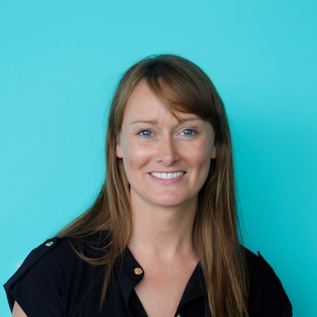

SESSION 1
Title: Stories from Female Tech Graduates
Speakers from Dell EMC, IBM, McKesson, Nimbus, Poppulo
Friday February 1, 2019 12:10-13:00, Seminar Room
Abstract
This session will give all participants the oportunity to hear from successful female tech graduates about their experiences and lessons learned.
About the speakers

Stepanie Sheehan is Vp of Operations at Poppulo. Stephanie is a key member of the management team that has grown Poppulo from being a small ambitious Irish start-up to becoming the global leader in its sector: employee communications. Stephanie began her career as a software developer after graduating from CIT with a degree in computer science. After 10 years of developing software, she moved into management heading up the engineering department at Poppulo and more recently running operations at Poppulo, spanning multiple disciplines from product development to professional services, customer success, internal IT and compliance.
Greta Jocyte is a Software Development Manager at IBM who specialises in Information Security. Greta has had a fast-paced career where she moved from Graduate Software Engineer to Development Manager in the space of three years. When she’s not keeping up to date with the latest technologies or encouraging women into the technology industry at events, she is enthusiastic about fitness and sharing her insights on self-development and career growth via her blog.
Laura Robson graduated from Business Information Systems, CIT in 2017. She joined DellEMC in July 2017 as part of a 2 year graduate program. She originally assisted with organizing training and travel, putting together business continuity plans and managing the budget for those activities. Then moved on project managing small projects such as updating hardware in an executive meeting room and supply the latest dell laptops to the sales leadership team. She is now managing a global project where they are consolidating the Skype environment within Dell.
Susan O'Riordanis a product owner at McKesson where she drives the vision of work and represents the customer to the development team. She believes that clear communication and building solid relationships is essential to successful product delivery. She is a certified product owner and has a degree in Computer Science from UCC. Susan spends her time out of the office reading or enjoying a good Netflix binge but can also be found attempting to teach her cat new tricks.